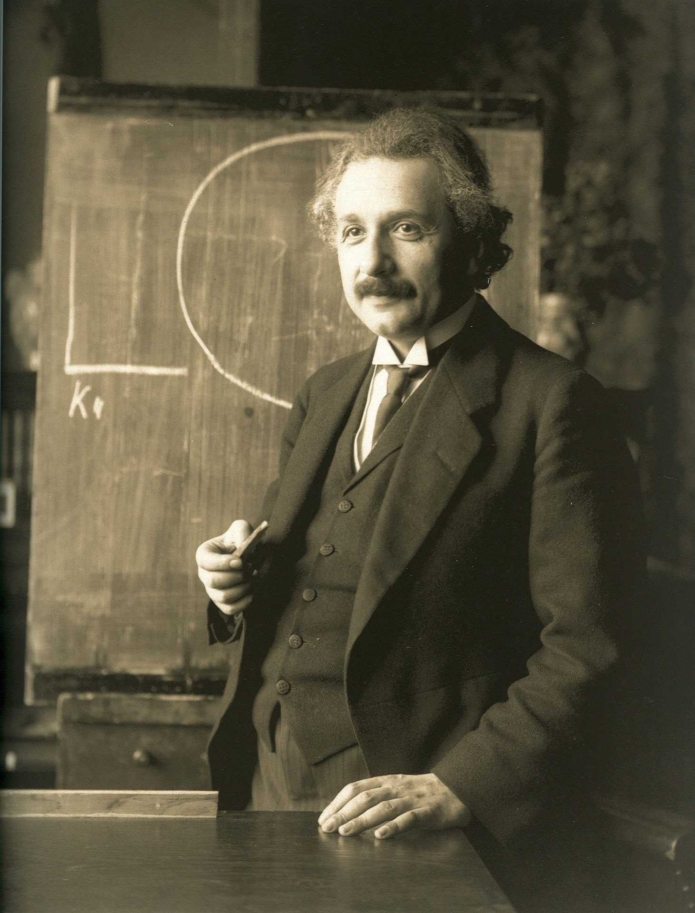
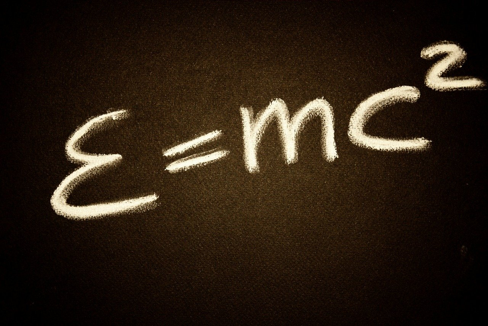
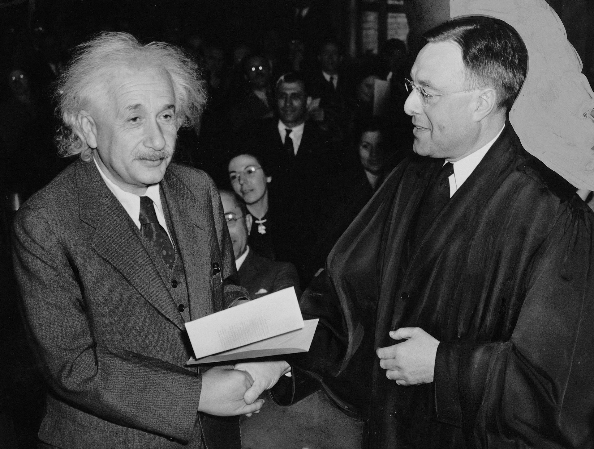

A tribute to Albert Einstein
German / American physicist

Albert Einstein in 1921
Albert Einstein developed the special and general theories of relativity, and was considered the most influential
physicist of the 20th century. In 1921 he was awarded the Nobel Prize for physics for his explanation of the
photo-electric effect.
Quotes by Albert Einstein
If I was not a physicist, I would probably be a musician. I often think in music. I live my daydreams in
music. I see my life in terms of music... I cannot tell if I would have done any creative work of importance in
music, but I do know that I get most joy in life out of my violin.
Life is like riding a bicycle. To keep your balance you must keep moving.
Everybody is a genius. But if you judge a fish by its ability to climb a tree, it will live it's whole
life believing that it is stupid.

Timeline of the life of Albert Einstein
- 1879 - Albert Einstein was born on 14th March in Ulm, Germany to Parents Hermann Einstein and Pauline Koch
- 1880 - The Einstein family moves to Munich
- 1881 - Albert's sister Maja (Maria) is born
- 1884 - Albert recieves a compass from his uncle that sparks his thjinking about scientific theory and inquiry
- 1891 - At age 12 Albert taught himself Geometry
- 1894 - Moves to Milan, Italy to join his family who moved there 6 months prior
- 1896 - He renounces his German citizenship
- 1901 - Studies in Switzerland and publishes his first scientific paper
- 1903 - Marries Mileva Maric
- 1904 - Son Hans is born
- 1905 - Completes papers on light quanta, Brownian motion and special theory of relativity. He also receives a
PhD from Zurich University. This is the year that his famous equation e=mc2 is formulated
- 1907 - Discovers the principle of equivalence
- 1910 - Second so, Eduard, is born
- 1911 - Predicts bending of light
- 1914 - Appointed Professor at University of Berlin. Separates from wife Mileva
- 1915 - Completes logical structure of the general theory of relativity
- 1917 - Writes first paper on cosmology
- 1919 - Divorces Mileva and marries his 1st cousin Elsa Einstein Loewenthal
- 1921 - Receives Nobel Prize for physics
- 1933 - Emigrates to the US
- 1934 - Collection of essays published called "The World as I see it"
- 1936 - Elsa Einstein dies
- 1938 - Publication of "The Evolution of Physics"
- 1939 - Sends letter to the US President Roosevelt recommending US research on nuclear weapons
- 1940 - Becomes a US citizen

- 1944 - His handwritten 1905 paper on special relativity auctioned in Kansas City for 6 million dollars and
contributes this money to the American War effort.
- 1948 - Supports creation of the State of Israel. First wife Mileva dies
- 1949 - Publication of "Autobiographical Notes"
- 1952 - Offered presidency of State of Israel and declines
- 1955 - Suffers rupture of an arotic aneurysm and passes away April 18, aged 76 in Princeton Hospital. His body
was cremated and his ashes scattered at an undisclised place.
Link to more information
about the life of Albert Einstein.